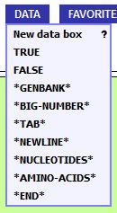
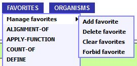
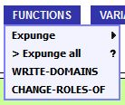
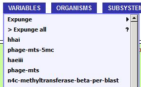
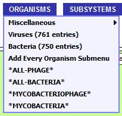
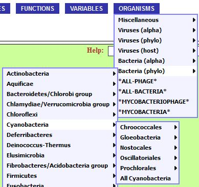
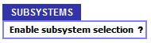
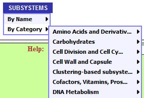

DETAILS
BLUE BUTTONS
| DATA menu
 |
This menu is a grabbag of constants that are useful in special circumstances
|
| FAVORITES menu
 |
BioBIKE keeps track of which functions you use the most and adds them to your Favorites menu. This might make it easier for you to find frequently used functions.
|
| FUNCTIONS menu
 |
This button appears only when you create your own functions using DEFINE-FUNCTION.
|
| VARIABLES menu
 |
This button appears only when you create your own functions using DEFINE.
|
| ORGANISMS menu
 |
The contents of this button will vary considerably from one BioBIKE instance to another. The menu allows access to all the genomes supported by the instance and to subsets of those genomes. |
|  |
In the case shown (PhAnToMe/BioBIKE), clicking Viruses or Bacteria causes their menus to be loaded.
The resulting menus present the organisms sorted alphabetically or according to phylogeny (or, in the
cases of viruses, according to bacterial host).
At each phylogenetic level, it is possible to select all organisms within that classification. In the case shown at the right, for example, clicking All Cyanobacteria creates a set consisting of all bacteria known to BioBIKE within the cyanobacteria. Proceeding one phylogenetic level down, the user would be able to create a set consisting of all Nostocales. Clicking any item that is not itself a menu (i.e. followed by a sideways triangle), causes the genome or set of genomes to be brought down into the workspace. |
| SUBSYSTEMS menu
 |
This button appears only in BioBIKE instances that use the SEED database. It provides access to human-curated categories of proteins. Since the menu takes several seconds to load, it is loaded only on demand, by clicking Enable subsystem selection. |
|  |
When subsystem selection is enabled, the subsystems are presented alphabetically
(By Name) and by functional category (By Category). The categories are
arranged hierarchically.
Clicking any item that is not itself a menu (i.e. followed by a sideways triangle), causes the subsystem to be brought down into the workspace. |